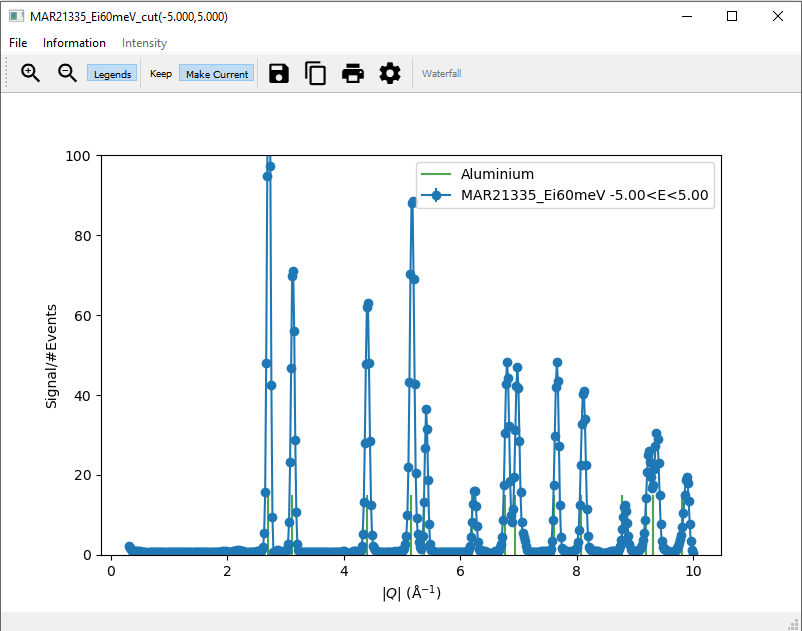

2. Taking Cuts¶
This page provides a more detailed explanation on taking cuts in MSlice.
2.1. Cutting from the GUI¶
The cut tab will be disabled by default, and enabled when you click on a cuttable workspace. This is either a loaded
non-PSD dataset (see PSD and non-PSD modes), or a PSD dataset for which you have done a Calculate
Projection (converted to an MD Event type workspace).
To plot a single cut, fill in values for the cut axis, labelled along, its limits (from and to), and the step
size. For non-PSD datasets you also have to select the axes over which to integrate, and the integration range.
One of the cut or integration axis must be energy transfer in this case. For a PSD dataset, the Calculate Projection
step specifies the two axes already. The axis which is not selected to plot along is implicitly used as the integration
axis.
If you type 0 in or leave the step input box empty, the default step size, determined from the data will be used.
You must specify values for the cut limits and integration range, however.
Multiple cuts can be plotted from the same dataset simultaneously by specifying an integration width. This will produce
cuts between the specified integration minimum and maximum with the specified width, with the last cut being the remainder.
For example, if from is 0 and to is 10 and width is 3, clicking Plot will overplot 4 cuts which
integrate over [0,3], [3,6], [6,9] and [9,10] respectively.
Cuts with the same range from multiple datasets can be plotted by first selecting multiple workspaces in the left panel.
There are two different methods to compute cuts: Rebin and Integration.
NOTE: for mantid major releases from v6.40, the default cutting algorithm has been changed from Rebin
to Integration. For more detail on this change, and cutting algorithms in general, see the Cutting Algorithms
section below.
Clicking on the Norm to 1 check box will cause the resulting cut data to be normalised such that the maximum of the data
of each cut is unity.
The Plot Over button allows you to overplot data on the same figure window without first clearing the current data. Note
that no check is made about whether the cuts makes sense (e.g. it is possible to plot a Q cut over an energy cut or vice
versa).
Finally, the cut figures have the same Keep / Make Current window management system introduced in the original
Matlab MSlice as the slices. Clicking Plot will send data to the Current figure window, clearing whatever was
previously plotted there. Clicking Plot Over sends data to the Current figure window but plotting over data already
there. If you wish to have a fresh plot but to keep the data in a particular plot figure window, click Keep. To make
a Kept figure Current again (for example to use Plot Over), click Make Current.
See Keep / Make Current for more details.
{kind=link}
You can edit the axes limits, scale and titles by double-clicking on the relevant axis in the plot window. Clicking on each plot line will also allow you to change its colour and symbol. These functionalities are also accessible from the options button (the cog symbol) in the plot figure toolbar.
2.2. Overplotting powder lines¶
{kind=link}
To help with a “first look” data analysis, MSlice can overplot on the cuts the positions of powder reflections from common
sample environment materials (Aluminium, Copper, Niobium and Tantalum). These functionalities may be accessed from the
Information menu option as shown above.
Powder reflections from an arbitrary crystallographic information format (CIF) file can also be plotted but note that we use the PyCifRW package to read CIF files and that some files generated by FullProf or GSAS may not be readable. In these cases, please load the files in Vesta or OpenBabel and resave them.
2.3. Saving cuts¶
Each time you click Plot or Plot Over an MD Histo type workspace is created, and can be accessed from the
corresponding tab. This workspace can be saved to Nexus (nxs), Matlab (mat) or ASCII (txt or xye) formats.
MSlice is able to load previously saved Nexus or ASCII cuts from file, but you may only then plot or overplot these cuts
(further manipulation of the cuts is not allowed, although you may normalise the intensity to unity for the plots).
The ASCII format is a simple three column x - y - e type format. For mat files, three vectors x
(coordinate), y (signal) and e (uncertainties) are saved.
From the plot figure window, you can also save the workspace data to the same formats (nxs, mat and txt). In
addition you can also save the figure as an image, either in png or pdf formats.
In order to save a cut from an Interactive Cuts, you can click the Save icon (floppy disk) direct on the cut
window, or first click the Save Cut to Workspace button to create an MD Histo type workspace and then use the Save button on
that tab.
When MSlice is used as a Mantid interface MD Histo type workspaces can also be saved to Mantid Workbench by clicking the
Save to Workbench button either on the MD Histo or the Cut tab.
2.4. Cutting Algorithms¶
There are two different methods used to compute cuts. Rebin uses the basic rebinning algorithms directly and effectively averages
the counts in the integration range, whilst Integration sums the counts in the integration range.
For mantid major releases from v6.40, the default cutting algorithm has been changed from Rebin to Integration. This change
has been made because the Integration method can be used for both absolute and non-absolute units measurements. Conversely, for
absolute units measurements the Rebin method will give incorrect and misleading values.
As a result of this change, it is expected that values calculanced henceforth will differ from those calculated historically, if the
default integration method has been used.